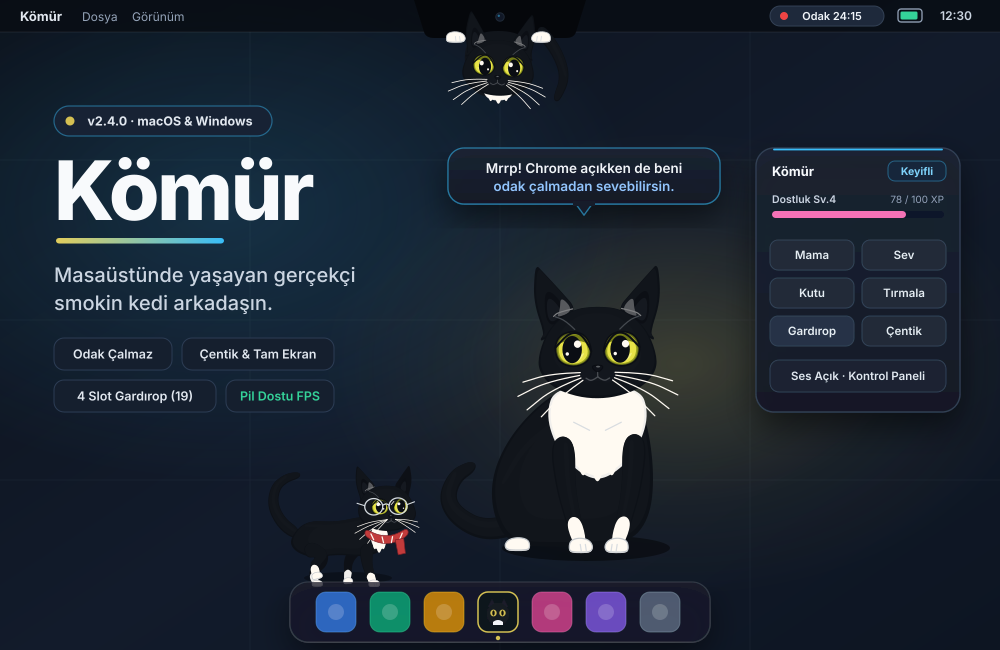

Desktop application
Kömür
A Python desktop cat with local AI, optional voice, memory and everyday assistance.
Project and downloadsProcess and outcome
Technology
Python, Tkinter, Pillow, SQLite, Ollama, PyInstaller, Inno Setup.
Version
1.1.0 · Windows 10/11 x64.
Token
Total development usage is unknown; no verifiable aggregate record is included.